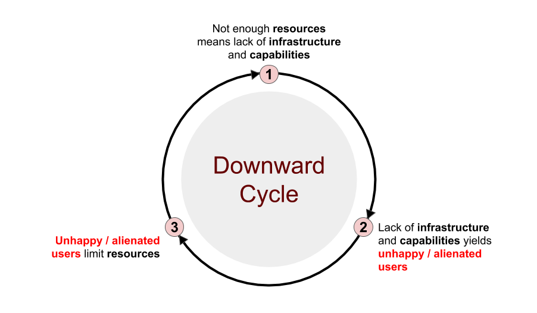

1.1. Problem¶
Computing is becoming a basic need in most developed societies. It allows us to communicate and share with others. It powers the applications that help us manage our lives and organizations, and helps us design, manufacture, and support the products and services we depend on. It helps us understand the world around us, and helps us change it. As time passes we become more connected and dependent on this new digital world.
But the digital world is not cheap or easy as many organizations find out as they journey to fulfill their mission. Technologists and management have to balance needs and weigh tradeoffs with an exponentially increasing amount of options. Below are a nexus of problems which the Zimagi system is designed to help people and organizations of all shapes and sizes address.
1.1.1. Organizations have limited people, budget, and time¶
At the forefront of our digital challenges is that we live in a world of scarce resources. We often have much to do and limited people, capital, and time to complete our objectives.
In the world of computing and automation we have certain basic needs:
Reasonably high performance and reliable systems to meet demand
Secure environments that protect people, data, and systems
Ability to standardize and automate processes
Ability to integrate and scale infrastructure across services and regions
The more high availability and geographically distributed the systems, the greater the cost and maintenance. It is also common that cloud services will provide superior offerings in certain regions or capabilities, which forces organizations to consider a multi-cloud strategy. At the end of the day users don’t care about infrastructure, they care about easily and efficiently being able to use the services they depend on.
Technology also changes fast, and services are always emerging that can help organizations in important ways. This requires people who are versatile, learn quickly, and can integrate the new into the existing architecture (with hopefully few issues). These people are hard to find, and even harder to keep.
So organizations have tradeoffs in meeting tech needs:
Less people requires more money and/or more time
Less money requires more people and/or more time
Less time requires more money and/or people
A lack of resources can feed a vicious cycle:
{kind=link}
The only way for organizations with limited resources to beat the downward spiral of resource scarcity is to work smarter, together, through standards and integrated practices (each focused on their core competencies).
1.1.2. Growing data and processing needs¶
By 2025, it is estimated at least 463 Exabytes (463,000,000,000,000,000,000 Bytes) of data will be generated each day. 1
Every day we are finding new data to collect and working on trying to understand it all. This trend will continue as long as we exist. With this new data and desire to understand, comes new storage and processing needs.
Growing data demand puts pressure to save on storage (often one of the most expensive and hard to maintain cloud services) and computing costs. Budgets and staff rarely increase with new data requirements, unless the organization is involved in a larger scale data transformation or migration.
The above situation combined with a dizzying array of data science/management focused cloud services focused on helping organizations collect and make sense out of their data (for a price) quickly drains resources. But the need to understand is not limited to resource rich organizations. Academic institutions, researchers, government departments, non profits, think tanks, and informal community groups also have the same needs.
If organizations on a budget want to grow their research operations or expand their digital service capabilities they need to become effective at allocating the scarce resources they have across a large heterogenious collection of services based on ever changing economic factors. This takes discipline, coordination, and standardized automation.
1.1.3. Platforms and applications require more resources¶
There are two simultanious trends that are pushing up the costs of hosting services; micro-services application architecture and application management platforms. Both are extremely valuable and leading us into the future of computing (but we do pay the price).
1.1.3.1. Micro-Services Application Architecture¶
Micro-Services application architecture seeks to break up larger functional systems into interconnected component APIs and smaller, more modular, interfaces. This is a great strategy that allows for independent development of each component in the system, and it allows for more diverse programing languages and frameworks to be used where they have clear advantages. Micro-Service architecture seeks to abolish the monolithic applications of old that were extremely hard to maintain.
The problems with micro-services design is that there is naturally more resources used to serve the final product. In the old days we might have had servers running multiple applications and services, but in the new world we split these up into separate runtimes (increasingly through containerization). Even with the reduced footprint of containers this architecture shift can use more computing resources and storage capacity than the old bundled approach.
If we think about it this makes sense. One application in the system may be a Django application that has a Python runtime on an Ubuntu OS. Another may be a Spring application with a Java runtime on a RedHat OS. These applications may talk seamlessly to each other to serve an integrated purpose. They might also rely on different queue systems, databases, or file storage. Splitting up an application system like this is quite handy, but it increases the resources needed and can potentially make the full system more difficult to design and scale with a limited team.
1.1.3.2. Application Management Platforms¶
There are many Platform as a Service (PaaS) vendors out there today, and a variety of open source application hosting platforms of different forms we can run internally to make micro services easier to design and manage. Some of these include; Open Shift, Cloud Foundry, and Kubernetes …
These platforms truly make development a lot easier. It is easier to assign privileges to developers / auditors, to link applications into a portable network architecture, and ensure everything is running according to plan using systems like these. They are designed to manage clusters of machines with a consistent interface and allow easy deployment of compatible applications. After working with many of these systems it is hard to imagine not using an application management platform.
The problem with application management platforms is they are very expensive to run, and often difficult to manage. Cloud services offer to manage them for us but this can be just as expensive or more than hosting ourselves, if we know how. The reason these systems are so expensive (especially in high availability configurations) is that they have a lot of moving pieces under the hood doing the heavy lifting; networks and bandwidth, servers, storage, and potentially other services.
Application management platforms are definitely a “we get what we pay for” ammenity. But even utilizing open source technologies we can not escape the overhead. In organizations with few applications this might not be justified.
1.1.4. Cloud services can be expensive if not used correctly¶
“ For the full fiscal year 2018, Amazon Web Services grew at a robust 47 percent and accounted for the bulk of the company’s profit. “ 2
The cloud has been touted again and again as a way to reduce costs. This is only partially true. There is a reason AWS makes so much money for Amazon, and all the major tech companies want in on the cloud. The real benefit of the cloud to organizations is multi vendor/region support and infrastructure automation, which enables scaling to meet customer needs (up and down).
Many organizations apply the same mindset that they operate data centers to the cloud to run infrastructure that simulates that of dedicated hardware. It is expected the systems will be run for a long time, and are often not very scalable. If organizations use the cloud like data centers they will inevitably pay a lot more. For constant needs that do not fluctuate much over time cloud services can be VERY expensive to maintain over a private cloud implementation.
The cloud excels at allowing organizations to distribute load across regions and vendors. If we design infrastructure architecture so it can scale up and back down when not needed the cloud can be economically beneficial. This is particularly true in application systems that experience volatility or spikes in usage over time.
Many organizations don’t understand this tradeoff and believe that any way they use the cloud they are going to save money. They are often surprised when they get ever increasing bills that drain their IT budgets quicker than expected (cloud usage and pricing are tricky to predict).
The only way to win with the cloud is with a smart cloud strategy that integrates diverse options so they can be applied where they make the most sense. Some cloud providers are better at certain things, and sometimes using our own hardware can save us a lot of money, so we have more money for IT projects.
1.1.5. Cloud services have unique architectures¶
Cloud vendors each have different services offered around particular technologies and typically implement proprietary architectures for management of cloud resources. This is understandable, as they are trying to compete and provide a unique service. It is also a great way to encourage longer term customers, because it takes time to integrate an organization’s infrastructure and operational practices with a new cloud service. This intentionally or unintentionally creates vendor lock-in, and often inhibits organizations ability to scale across providers.
But relying on a single cloud provider can be risky, even with regional distribution. Many cloud providers are actually conglomerates, which can sometimes compete with their customers (funneling the profits of the cloud to the competing business units). Sometimes they do not have the best prices or reliability. Vulnerabilities could be discovered, or services discontinued. New cloud services are popping up all the time by established players and new entrants to the market, which provide innovative services to solve important needs.
The way to capture the true value of the cloud is by leveraging it’s many facets. No single company has a monopoly on the cloud, and the battle for users is just heating up, offering incentives to play with new services. Truly innovative organizations experiment, but the cloud architectural differences sometimes prohibit experimentation in established IT teams. Many orchestration services are provider specific (Cloud Formation, Azure Resource Templates, …). Others offer multi cloud capabilities but map directly to each cloud providers architecture (Terraform, Ansible, …). Still another new form of hosted orchestration services (Anthos, Cloud Composer) are versatile, but come with a hefty price tag on top of regular cloud pricing.
There are different choices to integrate, but all come with some pretty serious limitations, which make it hard for cash strapped organizations to effectively pursue a unified cloud strategy.
1.1.6. Physical hardware is hard to build, configure, and manage¶
Many larger organizations pursue a hybrid cloud strategy because of issues related to legacy architecture, security, performance, or savings on core services. It is easier to design high performance systems on bare metal than on a hypervisor. Security can be more tightly managed with on premesis infastructure, and there are no cloud usage fees that can push the budget out of the park. It is easier to design capped cost physical systems.
Often the organizations choosing to pursue this path are realizing that implementing a hybrid cloud strategy is a difficult proposition.
It is typically difficult to automate and track physical hardware over time, and there is often a labor shortage for qualified IT personel that can dig in deeply to the physical issues of running a data center. Acquiring, integrating, decommishoning, and disposing of physical infrastructure is also more demanding than managing cloud resources through APIs.
Today we have cluster management platforms, like Kubernetes or OpenStack that can be deployed to create private clouds, and they do make the management of the hardware systems much easier, but they still require a dedicated staff to manage over time, and management practices have to integrate with the scalable cloud service strategy. It is best to combine hybrid cloud capabilities with a multi-cloud strategy and this is difficult.
Because of the work involved many organizations that could benefit from some of the hybrid cloud promises are choosing to stay virtual. This strategy can increase the costs of running infrastructure, which reduces the experimentation that cash strapped organizations could pursue.
1.1.7. The big picture¶
When we put the problems that organizations face discussed above in managing digital services together, it is easy to see why many organizations are behind the times or going broke on IT.
Organizations face budget crunches, staffing shortages, and impossible deadlines, while facing growing data and computing needs on a daily basis. Meanwhile they are being told to pursue technology architectures that require greater and more varied types of infrastructure and services, while cloud services make big money hosting those services through proprietary services that encourage vendor lock-in. The other alternative, building our own, is often like pulling teeth or renting a U-Haul to move ourselves (just not much fun). So organizations end up not being able to capitalize on their ideas and expand to provide the services that their users desire without massive investment.
Today organizations are increasingly looking for ways to improve efficiency and cost savings on networking, computing power, and storage space across services to compete more effectively in the market, make better policy recommendations and decisions, increase the breadth and depth of important research, and to effectively provide dependents what they need to succeed.
The only solution that can serve all needs and optimize costs long term is a unified hybrid / multi cloud strategy, which is often unobtainable to many organizations. This remains a big problem to solve for the future of enterprise computing, and the central focus of the Zimagi system.
- 1
World Economic Forum - How much data is generated each day?
- 2